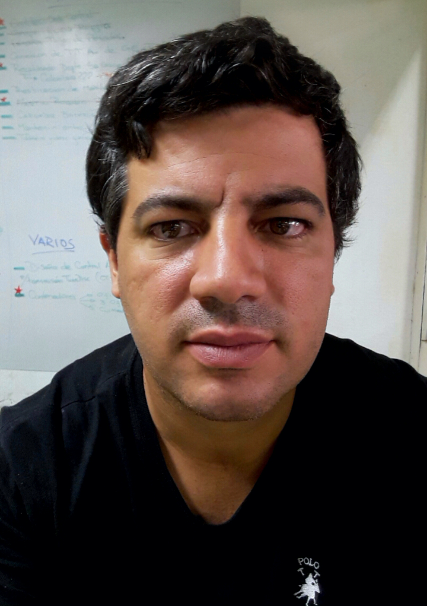

<!DOCTYPE html>
<html></html>
  <head>
    <title>CV de Bruno Adrover</title>
    <meta charset="utf-8">
    <meta name="description" content="Bruno es un ingeniero electrónico con experiencia en el mantenimiento de maquinas viales y procesos industriales">
  </head>
  <body style="font-family:Helvetica, Arial, sans-serif;margin: 0;">
    <header style="background-color:#992929;color:white;text-align:center;padding:16px;">
      <h1 style="display:inline-block;width:400px;font-weight:600;">CV de Martín Bruno Adrover</h1>
      <p style="display:inline-block;width:400px;font-weight:700;"> Ingeniero Electrónico</p>
    </header>
    <div style="background-color:#a0aaba;color:black;text-align:center;font-weight:100;padding:10px;">
      Más de 6 años de experiencia en el mantenimiento de equipos viales
    </div>
    <section>
      <div style="width:900px;margin-right:auto;margin-left:auto;">
        <div>
        <div style="display:inline-block;width:50%;vertical-align:top">
          <h3 style="font-size:36px;font-weight:700;">Educación</h3>
          <div>
            <dl>
              <dt style="font-size:22px;text-transform:uppercase;margin-bottom:12px;margin-top:36px">Ingeniero Electrónico</dt>
              <dd style="margin:0">2003-2011 Universidad Nacional de San Juan</dd>
            </dl>
          </div>
        </div>
        <div style="display:inline-block;width:30%;margin-top:12px">
          
        </div>
      </div>
        <div style="margin-top:70px">
          <h3 style="font-size:36px;font-weight:700;">Experiencia Profesional</h3>
          <div>
            <dl>
              <dt style="font-size:22px;text-transform:uppercase;margin-bottom:12px;margin-top:36px">Benito Roggio e Hijos S.A.</dt>
              <dd style="margin:0">2011-Actualidad. Encargado del Departamento de Electrónica</dd>
            </dl>
          </div>
        </div>
        <div style="margin-top:70px">
          <h3 style="font-size:36px;font-weight:700;">Publicaciones</h3>
          <div>
            <dl>
              <dt style="font-size:22px;text-transform:uppercase;margin-bottom:12px;margin-top:36px">AADECA</dt>
              <dd style="margin:0">2011. Sensor de Contenido de Agua en Vegetación no Invasivo</dd>
            </dl>
          </div>
        </div>
        <div style="margin-top:70px">
          <h3 style="font-size:36px;font-weight:700;">Capacitaciones</h3>
          <div>
            <dl>
              <dt style="font-size:22px;text-transform:uppercase;margin-bottom:12px;margin-top:36px">Plasser & Theurer</dt>
              <dd style="margin:0">2013. Linz, Austria. Mantenimiento y operación de equipos ferroviarios</dd>
              <dt style="font-size:22px;text-transform:uppercase;margin-bottom:12px;margin-top:36px">Afcon</dt>
              <dd style="margin:0">2017. Buenos Aires, Argentina. Sistema SCADA Afcon PULSE</dd>
            </dl>
          </div>
        </div>
        <div style="margin-top:70px">
          <h3 style="font-size:36px;font-weight:700;">Otros</h3>
          <div>
            <ul style="margin-top:12px;padding:0px">
              <li style="margin-top:16px;">Desarrollo de sistemas SCADA</li>
              <li style="margin-top:16px;">Automatización Industrial</li>
              <li style="margin-top:16px;">Desarrollo y reparación de módulos electrónicos de equipos Viales</li>
              <li style="margin-top:16px;">Sistema de inyección electrónica de combustible</li>
            </ul>
        </div>
      </div>
    </div>
    </section>
  </body>
